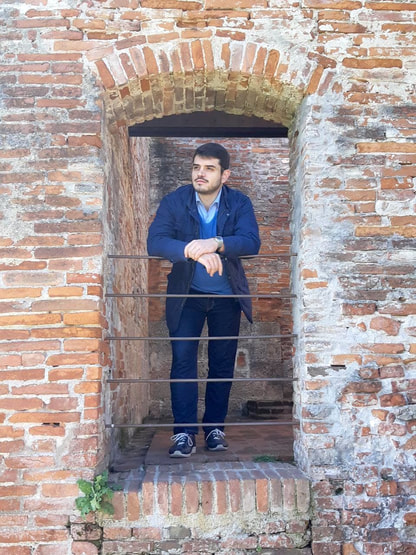

About me
Tenure-Track Assistant Professor
Ricercatore Tenure Track – RTT
Address
Università degli Studi di PadovaDipartimento di Matematica “Tullio Levi-Civita”
Via Trieste 63 – 35121 Padova (PD), Italy
Torre Archimede, IV floor, Room 4AB1
Contact
giorgio.stefani AT unipd.it
giorgio.stefani.math AT gmail.com
Research
Articles available on arXiv and CVGMT. Research profiles: ORCiD, ResearchGate, Scholar, Scopus, WoS.